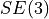
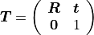
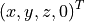
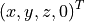
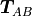
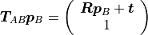
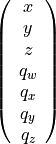

3D Transformations: SE(3)¶
The group of all transformations in the 3D Cartesian space is  (SE: special Euclidean group). Transformations consist of a rotation and a translation. Those can be represented in multiple different ways.
Transformation Matrix¶
One of the most convenient ways to represent transformations are transformation matrices. A transformation matrix is a 4x4 matrix of the form

It is a partitioned matrix with a 3x3 rotation matrix
and a column vector  that represents the translation.
It is also sometimes called the homogeneous representation of a transformation.
that represents the translation.
It is also sometimes called the homogeneous representation of a transformation.
It is possible to transform position vectors or direction vectors with it.
Position vectors are represented as a column vector
 .
This will activate the translation part of the transformation in a matrix
multiplication. When we transform a direction vector, we want to deactivate
the translation by setting the last component to zero:
.
.
This will activate the translation part of the transformation in a matrix
multiplication. When we transform a direction vector, we want to deactivate
the translation by setting the last component to zero:
.
We can use a transformation matrix  to transform a
point from frame  to frame
to frame  . For example, transforming a position vector
. For example, transforming a position vector  will give the following result:
will give the following result:

Position and Quaternion¶
An alternative to transformation matrices is the representation in a 7-dimensional vector that consists of the translation and a rotation quaternion:

This representation is more compact than a transformation matrix.